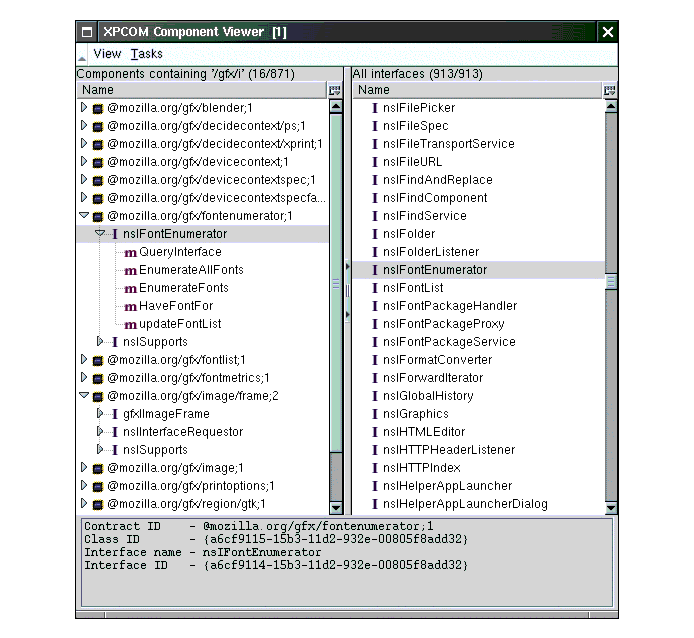

CHAPTER 2 Using XPCOM Components
One of the best ways to begin working with XPCOM-especially when you are designing the interface to a component that will be used by others, as we do in the chapter "Tutorial: Starting WebLock"-is to look at how clients are already using XPCOM components.
Applications like the Mozilla browser are sophisticated, modularized clients of XPCOM components. In fact, virtually all of the functionality that you associate with a browser-navigation, window management, managing cookies, bookmarks, security, searching, rendering, and other features-is defined in XPCOM components and accessed by means of those component interfaces. Mozilla is made of XPCOM components.
This chapter demonstrates how Mozilla uses some of these XPCOM objects, such as the CookieManager, and shows how access to the WebLock component will be defined.
Component Examples
We'll say more about how you can use the particular components described here in Appendix B, The XPCOM API Reference. For now, what's important to see is how components like the ones in this section are obtained and used by the Mozilla browser.
Cookie Manager
Cookie management is one of the many sets of functionality that is made available to the browser in the form of an XPCOM component and that can be re-used by developers who want similar functionality in their applications. Whenever a user accesses the Cookie Manager dialog to view, organize, or remove cookies that have been stored on the system, they are using the CookieManager component behind the scenes. Figure 1 shows user interface1 that is presented to the user in Mozilla for working with the CookieManager component.

Figure 1. The Cookie Manager DialogThis dialog is written in XUL and JavaScript, and uses a part of XPCOM called XPConnect to seemlessly connect to the CookieManager component (see XPConnect sidebar below). XUL is just one way to expose the functionality of the CookieManager component-but it's a particularly useful one in the Mozilla world.
The functionality of the CookieManager component is available through the nsICookieManager interface, which is comprised of the public methods in Table 1.
TABLE 1. The nsICookieManager Interface removeAll Remove all cookies from the cookie list. enumerator Enumerate through the cookie list. remove Remove a particular cookie from the list.
In XPCOM the interface is guaranteed to stay the same even if the underlying implementation changes. The interfaces are public, in other words, and the implementations are private2. When a user selects one of the cookies displayed in the list and then clicks the Remove buton, the Remove method in the nsICookieManager interface is called. The function is carried out by the CookieManager component, and the selected cookie is deleted from disk and removed from the displayed list.
The snippet in Figure 2 shows how the Remove() method from the XPCOM
CookieManager component can be called from JavaScript:
Figure 2. Getting the CookieManager Component in JavaScriptThis isn't quite all there is to it, of course, but this shows an important aspect of XPCOM. The contractual arrangements that XPCOM enforces open up the way to binary interoperability-to being able to access, use, and reuse XPCOM components at run-time. And they make it possible to use components written in other languages-such as JavaScript, Python, and others-and to use C++-based XPCOM components from these other languages as well.
In the Mozilla browser, components are used as often from JavaScript in the interface as they are from C++ or any other language. In fact, a search of the Mozilla source code reveals that this CookieManager component is called only from JavaScript. We'll be using this component from JavaScript ourselves as part of this tutorial3.
The WebBrowserFind Component
Components are used all over-in high-level browser-like functionality such as nsWebBrowserFind, which provides find() and findNext() methods for finding content in web pages, and in low-level tasks such as the manipulation of data. Though not every API in Mozilla is or should be "XPCOMified", much if not all of the typical functionality that browsers provide is available in components that can be reused via browser extensions and/or gecko embedders.
In addition to the CookieManager component, for example, the WebBrowserFind component is another part of a large set of web browsing interfaces you can use. Its nsIWebBrowserFind interface is shown in Table 2. To use this component, you access it through the nsIWebBrowserFind interface and call its methods.
Once you use the interface to get to the component, you can ask the component what other interfaces it supports. This service, which is defined in the basic nsISupports interface and implemented by all XPCOM components, allows you to query and switch interfaces on a component as part of the run-time object typing capabilities of XPCOM. It is handled by the QueryInterface method, which was introduced in the chapter "What Is XPCOM?" Appendix B in this book provides a full reference of the XPCOM components available in Mozilla.
The WebLock Component
Now it's time to look at the WebLock component as another example of XPCOM components (since you'll be creating it shortly). In object-oriented programming, it's typical to design the interface first-to define the functionality that's going to be provided in the abstract, without worrying about how this functionality will be achieved. So we'll put aside the details of the implementation until the next chapter and look at the component from the outside-at the interface to the WebLock component (see Table 3).
The WebLock component is software that implements all of these methods in the way described by the interface definition. It registers itself for use when the browser starts up, and provides a factory that creates an instance of it for use when the user or administrator clicks the weblock icon in the browser's user interface.
Component Use in Mozilla
So how are components obtained and used in Mozilla? You've seen some enticing snippets of JavaScript in earlier sections of this chapter, but we haven't explained how XPCOM makes components available in general.
This section discusses practical component use in Mozilla. It's divided into three subsections: one about actually finding all these binary components in Mozilla and two others corresponding to the two main ways that clients typically access XPCOM components:
- "Finding Mozilla Components"
- "Using XPCOM Components in Your C++"
- "XPConnect: Using XPCOM Components From Script"
Finding Mozilla Components
This book attempts to provide reference information for XPCOM components and their interfaces that are frozen as of the time of this writing. The Mozilla embedding project (www.mozilla.org/projects/embedding) tracks the currently frozen interfaces.
Mozilla also has some tools that can find and display information about the interfaces available in Gecko such as the XPCOM Component Viewer, described below, and LXR, which is a web-based source code viewing tool you can access from http://lxr.mozilla.org.
The challenge to making good information about XPCOM components available to prospective clients, however, is that the process of freezing the interfaces that are implemented by these components is still ongoing. The Component Viewer does not distinguish between components that are frozen and those that are not. In the source code you view in LXR, interfaces that have been frozen are marked at the top with @status frozen.
The XPCOM Component Viewer
The Component Viewer is an add-on you can install in your browser from www.hacksrus.com/~ginda/cview (see Figure 3),

Figure 3. XPCOM Component ViewerThe left column shows the components-in this case a subset returned from a search on `gfx' as part of the contractc ID and the right column a list of the interfaces. When you open a component on the left, you can see the interfaces it implements along with a list of the methods provided by each interface.
The XPCOM Component Viewer can be extremely useful for this sort of gross interrogation, but again: it displays all of the components and interfaces in your build, many of which are not practical for actual reuse or stable enough to be used reliably in your own application development. Use comprehensive lists like this with caution.
Using XPCOM Components in Your C++
XPConnect makes it easy to acess XPCOM components as JavaScript objects, but using XPCOM components in C++ is not much more difficult.
Figure 4 duplicates code from Figure 5, but in C++ instead of JavaScript.
Figure 4. Managing Cookies from C++If your application written in C++, then Figure 4 shows the steps you take to get an XPCOM component, specify the interface on that component you want to use, and call methods on that interface.
XPConnect: Using XPCOM Components From Script
The CookieManager component we discussed at the beginning of this chapter provides a good opportunity to talk further about using components from JavaScript. In the following code fragment from the Cookie Manager dialog in Mozilla, you can see a singleton of the the CookieManager component being created with the getService() method and used to provide the functionality that lets users load and remove cookies from the user interface.
Figure 5. Managing Cookies from JavaScriptBeyond the methods that are being called on the CookieManager itself (e.g., cookiemanager.remove, which maps to the remove() function from the IDL in Table 1 above), note the special XPConnect objects and methods that reflect the XPCOM component into JavaScript.
Components is the JavaScript object that controls the connection to components, and classes is an array of all of the classes you can ask for by contract ID. To instantiate an XPCOM component in JavaScript, you create a new Component object and pass in the contract ID for the component you want and ask for either a singleton or an instance of that component to be returned:
The resulting cookiemanager object then provides access to all of the methods for that component that have been defined in IDL and compiled into the type library. Using the CookieManager component, you could write code like this to delete all cookies from the system:
Another vital feature of the XPConnect glue this example shows is the availability of the QueryInterface method on all objects that are reflected into JavaScript from XPCOM. As in C++, you can use this method to ask for other interfaces that are available on the given object.
Services Versus Regular Instances
Whether to have clients use your component as an instance or a service is a design question, really, and something you should be clear about in the documentation for your component. Actually, the getService() method in the example here calls through to the createInstance() method that is also available from the Component object and caches the result, making it a singleton rather than a normal instance. The singleton design pattern that is used to create services is described in "XPCOM Services" on page 23.
Remember, QueryInterface allows you to query an object for the interfaces it supports. In the case of the snippet in Figure 5, the QueryInterface method is being used to get the nsICookie interface from the enumerator so that, for instance, the JavaScript code can access the value and name attributes for each cookie.
1 Note that the interface is not part of the component itself. XPCOM makes it easy to use components like CookieManager from Mozilla's Cross Platform Front End (XPFE) and other user interfaces, but the component itself doesn't provide it's own UI.
2 There are exceptions to this. Some XPCOM interfaces are also private and not made for general use. Private interfaces do not have the same requirements as the ones that are made available publicly in IDL.
3 The CookieManager component is used to persist for the web locking functionality described in this tutorial.
| Copyright (c) 2003 by Doug Turner and Ian Oeschger. This material may be distributed only subject to the terms and conditions set forth in the Open Publication License, v1.02 or later. Distribution of substantively modified versions of this document is prohibited without the explicit permission of the copyright holder. Distribution of the work or derivative of the work in any standard (paper) book form is prohibited unless prior permission is obtained from the copyright holder. |